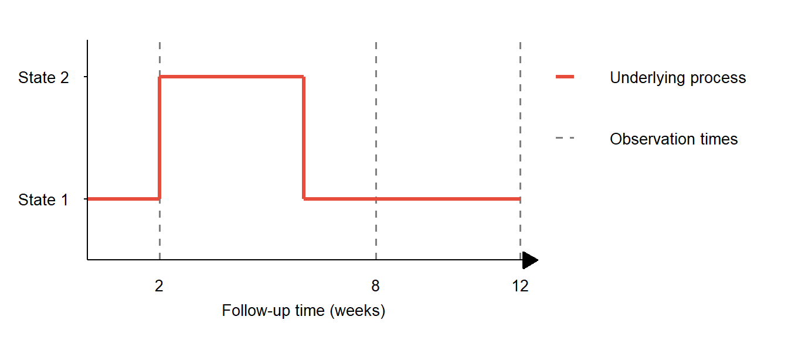

![]()

This is part six of a series on statistical methods for analysing time-to-event, or “survival” data.
In this post I’ll describe two statistical inference methods (non-parametric and parametric multi-state survival models). I discuss how these multi-state methods are well-suited to the investigation of intermittently-observed data.
Aalen-Johansen estimator
The non-parametric Aalen-Johansen estimator can be used to estimate the transition probability matrix, \(\mathbf{P}(t)\) for a Markov process with a finite number of states. Firstly, let \(\mathbf{A}(t)\) be the matrix of cumulative transition intensities from state \(r\) to state \(s\):
\[ \mathbf{A}(t) = A_{r,s}(t) = \begin{cases} \int_{0}^{t}{q_{r,s}(u) du} & \text{if } r\neq s \\ -\sum_{r \neq s}{A_{r,s}(t)} & \text{if } r = s \end{cases} \]
The transition probability matrix for this process can be represented as:
\[ \mathbf{P} = \prod_{k = 1}^{K}{\left(\mathbb{I}+\Delta\mathbf{A}(t_k)\right)} \]
where \(\mathbb{I}\) is the identity matrix, \(\Delta\mathbf{A}(t_k) = \mathbf{A}(t_k) - \mathbf{A}(t_k \mbox{-})\), and \(t_k \mbox{-}\) represents the instant before time \(t_k\). Substituting the Nelson-Aalen estimator for \(\mathbf{A}(t)\), then the Aalen-Johansen estimate of the transition probability matrix is:
\[ \mathbf{{\hat{P}}}(t) = \hat{P}_{r,s}(t) = \prod_{k = 1}^{K}{\left(\mathbb{I}_{r,s}+\Delta\hat{A}_{r,s}(t_k)\right)} \]
with:
\[ \Delta\hat{A}_{r,s}(t_k) = \begin{cases} \frac{\Delta N_{r,s}(t_k)}{Y_{r}(t_k \mbox{-})} & \text{if } r\neq s \\ \frac{-\Delta N_{s}(t_k)}{Y_{s}(t_k \mbox{-})} & \text{if } r = s \end{cases} \]
where \(\Delta N_{r,s}(t_k)\) is the number of transitions from state \(r\) to state \(s\) at time \(t_k\), \(\Delta N_{s}(t_k)\) is the number of transitions away from state \(s\) at time \(t_k\), and \(Y_{r}(t_k \mbox{-})\) is the number of individuals in state \(r\) just before time \(t_k\).
Multi-state mixture models
For a general multi-state competing risks mixture model, assume that an individual \(i\) who begins in state \(r\) makes a transition to a (pre-assigned) destination state \(s\). Let \(I_{i,r}\) be the indicator variable which determines which transition will occur, the transition intensity at time \(t\) is:
\[ q_{i,r,s}(t) = \begin{cases} q^{*}_{i,r,s}(t) & \text{if } I_{i,r} = s \\ 0 & \text{otherwise} \end{cases} \]
where \(q^{*}_{i,r,s}(t)\) is the transition intensity for the transition which occurs. The probability of transition to state \(s\) is defined as:
\[ \begin{align*} \pi_{r,s} & = \Pr(I_{i,r} = s) \end{align*} \]
Let \(T_{r,s}\) be the the time from entering state \(r\) to moving to state \(s\), given that this transition occurs (i.e. the conditional sojourn time). A parametric distribution with parameters \(\theta_{r,s}\) and conditional density \(f_{r,s}(. \mid \theta_{r,s})\) may be used to model \(T_{r,s}\).
Transition probabilities
The probabilities of competing events \(\pi_{r,s}\) can be related to a set of \(m\) covariates \(\boldsymbol{z} = \{z_1, \ldots, z_m\}\) via multinomial logistic regression. Define as \(S_r\) the set of all competing states after \(r\), then the logit of transition to a given state \(j \in S_r\) vs. transition to a baseline state \(0 \in S_r\) is:
\[ \ln\left(\frac{\pi_{r,j}(\boldsymbol{z})}{\pi_{r,0}(\boldsymbol{z})}\right) = \alpha_{r,j} + \boldsymbol{\beta}_{r,j}^\mathsf{T} \boldsymbol{z} \]
with \(\alpha_{r,j}\) and \(\boldsymbol{\beta}_{r,j} = \{\beta_{r,j,k};\; k = 1, \ldots m\}\) being regression coefficients for the probability of transition to state \(j\).
Meanwhile, parameters \(\theta_{r,s}\) of the time to transition distribution can be related to a different (or identical) set of \(l\) covariates \(\boldsymbol{z} = \{z_1, \ldots, z_l\}\) via a log-linear model with coefficients \(\gamma_{r,s}\) and \(\boldsymbol{\omega}_{r,s} = \{\omega_{r,s,k};\; k = 1, \ldots, l\}\):
\[ \log(\theta_{r,s}(\boldsymbol{z}))=\gamma_{r,s} + \boldsymbol{\omega}_{r,s}^\mathsf{T} \boldsymbol{z} \]
For most parametric time to transition distributions `accelerated failure time’ models are considered, where the covariates affect the rate of progression of time, i.e. the survival function \(S(t \mid \boldsymbol{z})\) for an individual at time \(t\) with covariates \(\boldsymbol{z}\) is related to the baseline survival \(S^{(0)}\) via:
\[ S(t\mid \boldsymbol{z}) = S^{(0)}\left(\exp(\boldsymbol{\theta}^\mathsf{T}\boldsymbol{z})t\right) \]
where \(\boldsymbol{\theta}\) is a vector of regression coefficients.
Likelihood contributions
The likelihood contributions are as follows:
For an individual who reaches state \(s\) at time \(t\): \[ l_i = \pi_i f(t\mid i=s) \]
For an individual who does not reach a state (e.g. remains in hospital) at time \(t\): \[ l_c = \sum_{i=1}^k\pi_i(1-F(t\mid i)) \]
where \(F(t\mid i) = \int_0^t f(x\mid i)dx\) is the conditional cumulative distribution.
Accounting for censoring
As described in part III of this series, survival models may be specified to account for censoring and truncation in observed data by careful consideration and construction of the likelihood function. Multi-state survival models, in particular, are well-suited to investigating interval-censored, or intermittently-observed data.
In Figure 2 from part II of this series, changes in an underlying process were detected with an intermittent observation scheme. Depending on the nature of the underlying process, less frequent and/or irregular observation may result in transitions being undetected, as shown in Figure 1 below. This could be an issue for survival models, particularly when there is a dependency between the observation times and the underlying process.
An observation scheme is said to be non-informative if the likelihood is proportional to a scenario where observation times were fixed in advance and chosen independently of the underlying process. With a non-informative observation scheme then multi-state models can correctly account for intermittently-observed data.
Implementing multi-state models
A number of sophisticated statistical software packages exist to implement frequentist and Bayesian survival and multi-state models using the R programming language. Frequentist maximum likelihood estimation tends to be less computationally intensive than Bayesian inference, and the latter may require integrating over a vast number of parameters, which is usually impracticable for higher dimensions. Instead, algorithms which simulate from the posterior distribution are often used to evaluate features of these integrals. Markov Chain Monte Carlo (MCMC) algorithms have been widely used for this application.
There are several specialised modelling packages available to fit multi-state models, including: survival, msm, flexsurv which fit models using maximum likelihood, and JAGS and STAN which fit Bayesian models using MCMC.
Two useful online tutorials for running statistical inference for survival and multi-state models are:
Survival analysis in R” by Emily C. Zabor
Multi-state modelling with msm: a practical course by Christopher Jackson
NoteKey takeaways
- The Aalen-Johansen estimator extends the Kaplan-Meier approach to provide non-parametric estimates of transition probabilities in multi-state models.
- Multi-state mixture models allow for different transition types with their own probability distributions and covariate effects.
- Intermittently-observed data with interval censoring can be properly handled by multi-state models when observation schemes are non-informative.
- Covariates can influence both the probability of transitions between states and the timing of those transitions.
- Both frequentist (maximum likelihood) and Bayesian (MCMC) approaches are available for fitting multi-state models, with several specialised
Rpackages providing implementation.
Coming next
In the next post I’ll introduce the concept of causal inference from observational data and provide an outline of three common methods to compute the average causal effect.
References
- Andersen PK, Borgan O, Gill RD, Keiding N. Statistical models based on counting processes. Springer; 1996. 784 p.
- Fagerland MW, Hosmer DW, Bofin AM. Multinomial goodness-of-fit tests for logistic regression models. Stat Med. 2008 Sep 20 [cited 2024 Feb 17];27(21):4238-53.
- Ghani AC, Donnelly CA, Cox DR, et al. Methods for estimating the case fatality ratio for a novel, emerging infectious disease. Am J Epidemiol. 2005 Sep 1;162(5):479-86.
- Grüger J, Kay R, Schumacher M. The validity of inferences based on incomplete observations in disease state models. Biometrics. 1991 Jun;47(2):595-605.
- Klein JP, Moeschberger ML. Survival Analysis: Techniques for Censored and Truncated Data. Springer Science & Business Media; 2005. 538 p.
- van den Hout A. Multi-State Survival Models for Interval-Censored Data. CRC Press; 2016. 238 p.
- Young GA, Smith RL. Essentials of Statistical Inference. Cambridge University Press; 2005.
- Zhao H, Li Y, Sun J. Analyzing panel count data with a dependent observation process and a terminal event. Can J Stat. 2013 Mar;41(1):174-91.
Reuse
Citation
BibTeX citation:
@online{kirwan2025,
author = {Kirwan, Peter},
title = {Part {VI:} {Statistical} Inference for Multi-State Models},
date = {2025-04-24},
url = {https://www.pkirwan.com/blog/statistical-inference-msms/},
langid = {en}
}
For attribution, please cite this work as:
Kirwan, Peter. 2025. “Part VI: Statistical Inference for
Multi-State Models.” April 24, 2025. https://www.pkirwan.com/blog/statistical-inference-msms/.